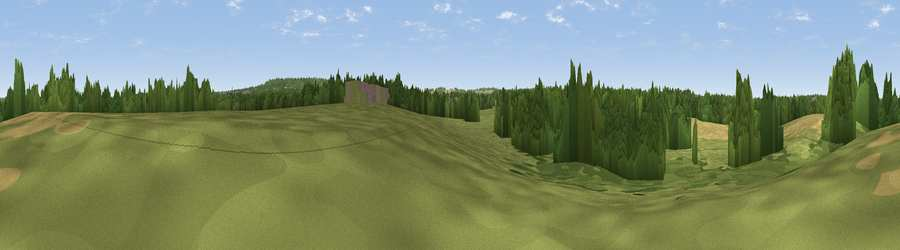

Viewpoint near Crookham Village
#44378 in England · top 75% of its area beats it · near Crookham VillageThe view, rendered

A 360° render of this exact spot computed from the terrain model, tree cover and land cover — summer colours, afternoon light, calibrated against photographs of famous viewpoints. Real trees, hedges and buildings will differ in detail.
The panorama
Grey silhouette: terrain skyline in each direction (720 bearings, Earth curvature and refraction included). Dashed green: skyline with trees (+15 m) and buildings (+8 m) as obstacles. Blue strip: how far the ground is visible on each bearing.
Where the view opens
Wedge length = distance to the farthest visible ground on that bearing (vegetation-aware). Rings at 10, 25 and 50 km.
What fills the view
50% woodland · 32% grassland · 15% cropland · 2% built-up
Angular shares of the visible panorama (visual magnitude), not map area. Landscape diversity 0.47 (0–1 Shannon).
Key numbers
More beautiful places nearby
The staircase of upgrades: each row has a higher view potential than everything closer. Driving times are estimates from straight-line distance, calibrated against real road routing — check an actual route before setting out.
| Place | Direction | Drive | Score |
|---|---|---|---|
| Viewpoint near Ewshot | ESE · 3 km | ~7 min | 32.0 |
| Viewpoint near Ewshot | SE · 3 km | ~8 min | 52.5 |
| Horsedown Common | SW · 4 km | ~9 min | 59.0 |
| Viewpoint near Puttenham | ESE · 13 km | ~24 min | 62.0 |
| Viewpoint near Wanborough | ESE · 16 km | ~28 min | 65.5 |
| Viewpoint near Compton | E · 17 km | ~30 min | 66.7 |
| Viewpoint near Hascombe | ESE · 24 km | ~40 min | 70.1 |
| Viewpoint near Fernhurst | SSE · 26 km | ~42 min | 75.1 |
51.25650, -0.87072 · source: osm peak · position refined by local search. Computed location — check access rights before visiting.